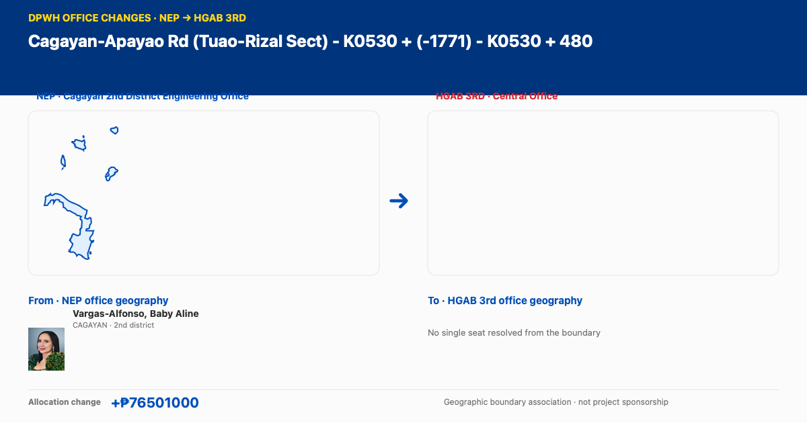

Office change · Cagayan-Apayao Rd (Tuao-Rizal Sect) - K0530 + (-1771) - K0530 + 480

Geographic representatives associated with mapped DEO boundaries
Vargas-Alfonso, Baby AlineFrom · NEP office · CAGAYAN · 2nd districtHouse profile ↗
NEP Cagayan 2nd District Engineering Office → HGAB 3rd Central Office · allocation change +₱76,501,000. Geographic representatives are associated with mapped DEO boundaries, not project sponsorship. These geographic associations indicate mapped boundary coverage, not project sponsorship.
Open the DPWH office changes explorer ↗